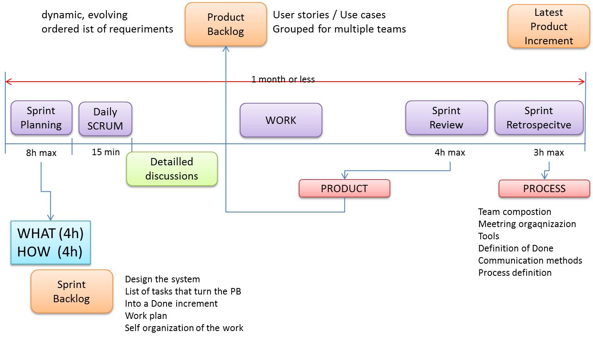

<!DOCTYPE html PUBLIC "-//W3C//DTD HTML 4.01//EN" "http://www.w3.org/TR/html4/strict.dtd">
<html>   
<link rel="stylesheet" type="text/css" href="../../css/plainStyle.css">
<script type="text/javascript" src="../../css/issStyle.js"></script>
<head>

<title>SCRUM</title></head><body>
 
<div id="main">
<h3 id="h3">SCRUM</h3>
    <p>
        
Scrum is an iterative and incremental <i id="i">agile</i> software development framework. 
Nowadays, Scrum is one of the most popular frameworks used in software
development.   However, Scrum can be applied to any
product being developed which requires intellectual work.
</p><p>

</p><p>
                                                                             
In 1986 Hirotaka Takeuchi and Ikujiro Nonaka described a new approach to product development, 
which leaded to what we now know as Scrum. They came up with
the initial concept, including the word Scrum itself. This make them the
fathers of this technology.
</p><p>    
The word <i id="i">Scrum</i> base derives from the rugby term which
describe the whole team that step by step advances towards the try.
The basci idea is a development team which work together as a single entity whose final goal is
the fulfilment of the product.
</p><p>    
Scrum emphasizes the idea of Empirical Process Control that relies on
three main idea: transparency, inspection and adaptation.
</p><p>
    The Scrum process is structured in cycles of work called <i id="i">Sprints</i> 
(fixed period of 2 to 4 weeks). The Sprints cannot be extended
</p><p>
During each Sprint, the Team agrees on a set of features that are going to be
implemented before the next one. The items are picked from a prioritized list
called the Product Backlog. The set of picked functionalities is
    called <i id="i">Sprint Backlog</i>.
    The <i id="i">Product Owner</i> takes care of the Product Backlog.
This is the goal to achieve before the next Sprint.
The meeting in which the Team and the Product Owner agrees on the Goal
is called Planning Meeting, and it is held at the beginning of each Sprint.
Sprint Backlogs cannot be modified. It is not possible to add, remove or
change the chosen items. Scrum welcomes change but not during the current
Sprint. Thus, every change can and has to be made during the next one.
</p><p> 
Daily Meeting. This is a 15
minutes long meeting in which each member share with the team his task
status and raises a 
ag in case there is any diculty. If there is, the Scrum
Master will do his best to solve it.
    
</p><p>    
Ken Schwaber and Jeff Sutherland:
"Scrum is a process framework that has been used to manage
complex product development since the early 1990s. Scrum is
not a process or a technique for building products; rather, it
is a framework within which you can employ various processes
and techniques. Scrum makes clear the relative efficacy of your
product management and development practices so that you can
improve."
</p><p>    
Scrum is lightweight, simple to understand and difficult to master.
</p><p>   
The people involved in the software development process are the pillar of the development process.
</p><p> 
Scrum, other than a framework, is also a great tool for diagnosing problems. If there is something not working properly in the process, be sure that it is going to let you know. The difficulty is then how to solve
the problem. The framework, of course, does not tell you how to do it.
</p><p>    
In Scrum there is no role of <i id="i">project manager</i> at all. The reason for it is
that none is needed. The traditional responsibilities of a project manager
have been divided and reassigned among the three Scrum roles. 
Implementing Scrum with the addition of a project manager indicates a fundamental
misunderstanding of Scrum.   
</p>
</div>
    

<div id="bottom">
By AN  Unibo-DISI    
</div>
    
     
 
</body></html>